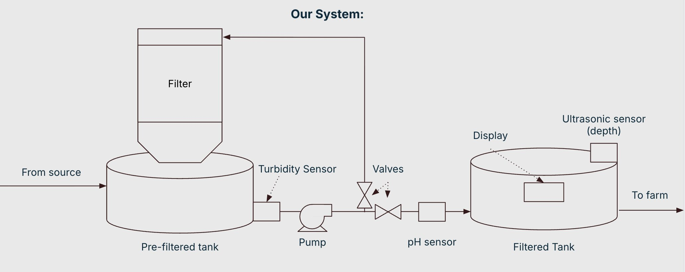
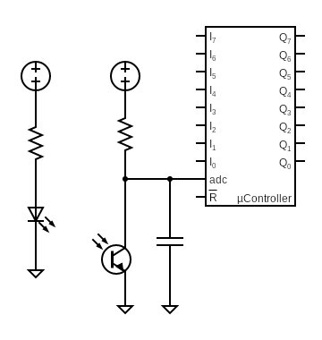

1) Background / Introduction
Use case: reliable drip / micro irrigation when the available water source is turbid surface water (runoff‑affected ponds, canals, rivers, holding tanks) whose sediment load changes with rainfall and seasonal conditions. Drip systems are sensitive to particulates because emitters have small passages and clog quickly as turbidity rises.
Market context: the global drip irrigation market is valued at about $6B (2024) and is projected to grow at ~10–12% CAGR through 2030. Major drivers include precision agriculture adoption, water scarcity, increasing sediment variability, and broader automation of farm systems.
Problem it solves: today, turbidity fluctuations force growers to either (i) accept clogging and downtime or (ii) install oversized, maintenance‑heavy filtration (screen/sand/disk systems plus chemical injection) designed for worst‑case conditions. This raises cost and energy use even when the source water is temporarily cleaner.
Why adaptive here: turbidity is a fast‑changing and measurable variable. A sensor‑gated, semi‑batch loop can run filtration only as long as needed to hit an irrigation‑relevant clarity target (design objective: < 10 NTU for drip/micro irrigation), then transfer the batch to storage. When turbidity spikes after storms, the same system simply runs longer rather than requiring permanent over‑filtration.
- Growers using drip/micro irrigation with variable source water (surface water or mixed sources).
- Operators who experience emitter clogging, frequent maintenance, and inconsistent irrigation reliability.
- Deliver “irrigation‑ready” water by driving turbidity below a threshold (objective: < 10 NTU).
- Minimize energy by avoiding continuous filtration when not needed.
2) Overall Design (Expanded — updated for irrigation customer)
Our system connects to a continuous irrigation water source (feed line from a pond/canal/holding tank). It runs in a semi‑batch cycle: it produces a batch of treated irrigation water when the storage level is low, rather than filtering nonstop. This keeps the system simple, reduces unnecessary pumping, and makes the adaptive behavior clear: keep cycling water until the sensor indicates it is clean enough to transfer.
System Concept (Semi‑Batch, Sensor‑Gated)
- Source connection: a feed line supplies raw water when the inlet valve is opened.
- Raw batch chamber (Tank 1): a dedicated container is filled to a set level at the start of each cycle.
- Recirculation loop: a pump repeatedly drives water through sensing and filtration stages, returning to Tank 1.
- Clean storage reservoir (Tank 2): once water meets the turbidity threshold, it is routed into a storage tank where pH is measured and displayed.
- User interaction: the user draws from the clean storage reservoir; the system detects low/empty and starts the next batch automatically.
Why two tanks: Tank 1 is the controlled “process volume” that we recirculate until it reaches the clarity target. Tank 2 is a decoupled storage buffer that can be large; we can keep adding completed batches to Tank 2 without being limited by the batch size, while keeping the control problem stable and repeatable (always treat a known batch volume in Tank 1).
Flow Path (Detailed)
- Fill: when the clean storage reservoir is detected as low, the controller opens the inlet valve and fills the raw batch chamber to a target level (measured using an ultrasonic sensor or a float switch).
- Recirculate + treat: the pump circulates water through (i) an optical turbidity sensing section and (ii) the filtration module, then returns the stream to the raw batch chamber. This repeats until turbidity indicates sufficient clarity.
- Pass condition: once turbidity stays below a threshold for a hold time (with hysteresis to prevent rapid toggling), the controller switches the plumbing from recirculation mode to transfer mode.
- Transfer to clean reservoir: pinch valves close the recirculation return path and open the path into the clean reservoir, sending the treated batch to storage.
- Display + ready state: the clean reservoir includes a pH sensor whose reading is shown on a display. The system idles until the clean reservoir drops below a low threshold, at which point a new batch is triggered.
Filtration Module (Mesh + Activated Carbon)
The filtration module uses two complementary mechanisms. First, a fine mesh or filter pad removes suspended solids through size exclusion: particles larger than the pore openings are physically retained, which reduces cloudiness and protects emitters. Second, an activated carbon stage provides adsorption capacity for dissolved organics (useful for irrigation sources with organic load, odors, or dissolved species that impact system performance). Together, these stages target both visible turbidity and non‑particulate contributors that matter for operation.
- Fine mesh / filter pad: removes particulates (silt, debris, suspended solids) by size exclusion and interception.
- Activated carbon bed: adsorbs dissolved molecules in its pores; provides added treatment margin for organic load.
- Design considerations: flow rate affects contact time in carbon and pressure drop across media; both influence performance and pump requirements.
Turbidity Sensing with a Photoresistor (Optical Clarity)
The adaptive decision variable is turbidity/clarity measured optically. A low‑cost implementation uses an LED light source and a photoresistor (LDR) placed across a small inline chamber (or a transparent segment of tubing). Suspended particles scatter and absorb light, so cloudy water reduces the amount of light reaching the photoresistor. As water becomes clearer, more light reaches the sensor and the LDR’s resistance changes in a repeatable way.
- Measurement approach: the microcontroller reads a voltage divider output from the LDR, which correlates with transmitted light intensity.
- Why it is sufficient here: even without absolute NTU calibration, it provides a consistent relative signal to detect “getting clearer” and “clear enough.”
- Practical notes: use a light‑shielded housing to block ambient light, keep geometry fixed, and apply averaging/median filtering to reduce noise.
- Calibration plan: record a clean baseline (clear water) and a dirty baseline (intentional turbidity, e.g., fine silt), then set thresholds with hysteresis to avoid valve chatter near cutoff.
Control Logic (High‑Level)
- Trigger: if the clean reservoir level is low, start a new batch.
- Fill: open the inlet valve until the raw batch chamber reaches the target level.
- Filter loop: turn the pump on and recirculate while monitoring turbidity; continue cycling while readings indicate the water is still too cloudy.
- Pass + transfer: if turbidity remains below threshold for a set hold time, switch pinch valves to route flow to the clean reservoir.
- Stop: stop the pump when the batch is depleted or when the clean reservoir is full, then return to idle.
- Display: measure pH in the clean reservoir and display it for user awareness and diagnostics.
Future Sensor Additions (If Time Allows)
If time and budget allow, additional sensors could improve robustness and provide better insight beyond turbidity alone. Examples include a conductivity/TDS sensor for dissolved ions, temperature for compensation/logging, and simple flow sensing to detect clogs and estimate filter loading over time. Large‑scale irrigation systems also commonly use chemical injection, which is a natural extension for advanced prototypes.
Diagram

3) Chemical / Physical Principles
Our system combines mechanical filtration and activated carbon treatment, then uses sensor feedback to decide when the water is “clean enough” to transfer into the storage reservoir. For this prototype, contaminants that matter operationally fall into two categories: suspended particles (drive turbidity and clogging risk) and dissolved compounds / organics (can contribute to fouling, odor, and inconsistent behavior over time).
Filtration + treatment (mesh + activated carbon)
The treatment module is a two‑stage approach in one integrated path. First, a fine mesh or filter pad removes suspended solids primarily through size exclusion and interception (particles are physically retained by pores or collide with fibers). Second, activated carbon provides adsorption capacity: dissolved molecules adhere to the carbon’s internal pore surfaces due to its high surface area. Recirculation increases the number of passes and total contact time with both stages, improving performance when starting water quality is worse (e.g., post‑rain runoff).
- Mesh / filter pad: targets turbidity‑causing particles and reduces cloudiness; protects emitters.
- Activated carbon: targets dissolved organic compounds and other adsorbable species; adds treatment margin.
- Key tradeoff: tighter filtration and longer contact time improve quality but increase pressure drop and cycle time.
Turbidity and optics
Turbidity measures how much suspended material is present. Particles scatter and absorb light, making water appear cloudy and reducing transmission. During a cycle, filtration removes suspended particles so the turbidity signal should improve continuously and then plateau. That monotonic trend makes turbidity a practical real‑time variable for closed‑loop control: the system can keep filtering until the signal stabilizes below a target threshold.
Our turbidity sensor uses a simple optical transmission setup: an LED shines across a small inline chamber (or clear tubing segment), and a photoresistor measures received intensity. Cloudier water reduces received intensity; clearer water increases it. The microcontroller reads the photoresistor via a voltage divider, giving a repeatable “clarity” signal even if not calibrated to lab‑grade NTU units.
- Optical principle: suspended particles scatter/absorb light, reducing transmission and increasing apparent turbidity.
- Expected trend: as filtration proceeds, transmitted light increases and plateaus as water becomes clear.
- Noise sources: bubbles, turbulence, splashing, and ambient light leakage.
- Mitigation: light‑shielded housing, fixed geometry, and moving average/median filtering on the sensor signal.
- Decision logic: turbidity threshold + hold time, with hysteresis to prevent rapid switching near cutoff.
- Calibration: clean baseline (clear water) + dirty baseline (fine silt) → choose thresholds that separate “still cloudy” from “consistently clear.”
pH
pH provides context about water chemistry and is displayed as an informational metric. Irrigation water pH influences nutrient availability and scaling risk, but pH alone does not quantify clarity or specific dissolved contaminants. We therefore use turbidity as the control variable and treat pH as a diagnostic/monitoring signal for consistency across runs.
Flow, mixing, and contact time
Pump flow rate affects pressure drop across the filter and contact time in the carbon stage. Higher flow can shorten cycle time but reduces per‑pass contact time; lower flow improves adsorption effectiveness but reduces throughput. As the filter loads, resistance increases and the pump curve shifts, changing performance over time. The advantage of the sensor‑gated semi‑batch approach is adaptability: the system can run longer when conditions require it, instead of assuming worst‑case at all times.
Extensions (if time allows)
Additional sensing (conductivity/TDS, flow, temperature) can improve monitoring, detect clogs, and characterize dissolved contaminants not captured by turbidity alone. Chemical injection is also common in large irrigation systems and could be integrated in future iterations.
4) General Materials and Parts List (Expanded — with diagram slots + prices)
This section outlines the major components required to build the adaptive irrigation‑filtration prototype. Components are selected to support real‑time sensing, adaptive control, and low‑cost prototyping consistent with the overall system design.
Turbidity Sensing
The turbidity sensor provides the primary control signal for adaptive filtration. It uses an optical transmission setup in which an LED shines through flowing water and a photosensitive element measures transmitted light intensity. Changes in turbidity directly affect the received signal.
Electrical Components- Arduino UNO R3 (or equivalent MCU) — ~$20
- 5 V USB power supply — ~$7
- IR LED / LED source — (included in turbidity module cost)
- GL5528 photoresistor (LDR) — (included)
- 100–220 Ω resistor (LED current limit)
- ~100 kΩ resistor (photoresistor voltage divider)
- Breadboard and jumper wires
- Opaque sensor housing / black heat‑shrink tubing
- The photoresistor output is read as an analog voltage and used to detect relative clarity changes.
- Light shielding reduces noise from room lighting and reflections.

LED + resistor → optical chamber → LDR voltage divider → Arduino analog inputpH Sensing
The pH sensor provides chemical context and user‑facing feedback but does not directly control filtration. pH is measured in the clean reservoir and displayed to the user.
Electrical Components- Arduino UNO R3 (or equivalent MCU) — ~$20
- pH sensor module — ~$24
- Display screen — ~$10
- pH is measured after treatment to provide a chemistry “context” readout.
- The display provides real‑time pH feedback to improve transparency and debugging.
Filtration and Adsorbent Module
The filtration module combines mechanical particle removal and adsorption to address both turbidity and dissolved contaminants.
Components- Activated carbon — ~$32
- Micron‑scale nylon mesh / filter pad (target ~150 µm for emitter protection) — ~$13
- Mesh removes suspended solids through size exclusion/interception, reducing clogging risk.
- Activated carbon adsorbs dissolved organic compounds; adds treatment margin.
- Flow rate and packing density affect pressure drop and contact time; optimized during testing.
Valve and Flow Routing (Adaptive Control)
Pinch valves control whether water is recirculated for further treatment or transferred to the storage tank once turbidity criteria are met.
Components- 2 × micro servo motors — ~$8 total
- 2 × pinch valve housings (3D printed) — ~$8
- External 5–6 V power supply for servos
- Common ground wiring between Arduino and servo supply
- Servos actuate pinch valves to redirect flow without contacting water.
- External servo supply prevents voltage drops and unintended MCU resets.
- Enables clean switching between recirculation and transfer modes based on turbidity.
Pump, Tubing, and General Fluid Handling
Components- Pump — ~$25
- Flexible tubing — ~$3.50
- Barbed hose fittings + clamps / zip ties
- Sealant / gaskets as needed
- The pump enables repeated recirculation through the treatment loop.
- Standard tubing/fittings allow fast prototyping and reconfiguration.
Water Level Sensing (Ultrasonic Sensor)
Components- Ultrasonic distance sensor
- Arduino UNO R3 (or equivalent MCU)
- Measures distance to the water surface to estimate reservoir level.
- Triggers batch start when storage is low and stops filling at target level.
Tools and Fabrication Equipment
- Soldering iron, wire cutter/stripper, multimeter
- 3D printer (e.g., Bambu Lab P1S) + PLA — ~$5
Note: The turbidity sensor module itself is budgeted at ~$1.50 in the prototype BOM; in practice, the LED/LDR + housing + wiring dominate assembly effort even if component cost is low.
Sources (from presentation)
- USGS Water Science School — Turbidity and water
- California Water Boards — Water quality guidance (3150en.pdf)
- IWA Publishing — Agricultural water quality criteria (jwrd article)
- USDA NASS — Irrigation & Water Management Survey (2024-10-31 release)
Market Overview
| Item | Content | Source |
|---|---|---|
| Market size | Global drip irrigation market ≈ $6B (2024) | https://www.stellarmr.com/report/Drip-Irrigation-Systems-Market/1397#:~:text=Drip%20Irrigation%20Systems%20Market%20%2D%20Global,13.11%25%20from%202025%20to%202032. |
| Trend / CAGR | Projected ~10–12% CAGR through ~2030 | https://www.stellarmr.com/report/Drip-Irrigation-Systems-Market/1397#:~:text=Drip%20Irrigation%20Systems%20Market%20%2D%20Global,13.11%25%20from%202025%20to%202032. |
| Fragmentation | Fragmented across filtration tech (screen/sand/disk) + chemical treatment add-ons | https://www.dripworks.com/blog/what-are-the-different-types-of-filters-for-your-irrigation-system?srsltid=AfmBOoqGklr7gLTxcC_arfwwyXhGFOB5skZZm0hEe04EHYTBNPaaLTfp |
SWOT
| Strength | Weakness | Opportunity | Threat |
|---|---|---|---|
| Adaptive filtration reduces emitter clogging; real-time water quality monitoring; lower maintenance vs static filters | Requires electrical power; sensor calibration required; additional hardware complexity | Precision agriculture growth; smart farm automation; water scarcity policy pressure | Established irrigation OEMs; conservative adoption; certification / compliance requirements |
List comparable devices, price points, and key specs.
| Product | Price | Notes |
|---|---|---|
| Screen filters (Netafim) | Varies | Fixed filtration level; not turbidity-adaptive |
| Sand filters (Amiad) | Varies | High maintenance / backwash needs |
| Disk filters (Rain Bird) | Varies | Clogging risk under variable sediment load |
| Chemical treatment (injection) | Varies | Added operating cost; doesn’t solve solids clogging alone |
Rough BOM split: materials vs electronics vs manufacturing.
| Category | Est. Cost |
|---|---|
| Electronics (MCU + display + sensors) | ~$55.5 (MCU $20 + pH $24 + screen $10 + turbidity $1.5) |
| Media / filter (mesh + activated carbon) | ~$45 ($13 mesh + $32 carbon) |
| Pump / valves / plumbing | ~$36.5 ($25 pump + $8 servos + $3.5 tubing) |
| Fabrication (PLA / 3D printed parts) | ~$5 |
| Estimated prototype total | ~$149 |
What gap do you fill? What makes it "adaptive" and why buyers care?
- Reliable drip irrigation from variable, turbid surface water using real-time sensing to adjust filtration automatically.
- Reduces clogging, downtime, and maintenance cost vs fixed filtration systems.
- Targets <10 NTU for drip/micro irrigation while minimizing energy use (semi-batch, sensor-gated recirculation).
Gantt Chart
| Task | W1 | W2 | W3 | W4 | W5 | W6 | W7 | W8 | W9 | W10 | W11 | W12 | W13 | W14 | W15 | W16 | W17 |
|---|---|---|---|---|---|---|---|---|---|---|---|---|---|---|---|---|---|
| Preliminary Design (100 pts) | |||||||||||||||||
| Research principles | |||||||||||||||||
| Calculations | |||||||||||||||||
| Prototyping approach | |||||||||||||||||
| GitHub Page/Wiki | |||||||||||||||||
| Initial Design (100 pts) | |||||||||||||||||
| Market research / SWOT | |||||||||||||||||
| Competitor analysis | |||||||||||||||||
| Value proposition | |||||||||||||||||
| Gantt chart | |||||||||||||||||
| Demo 1: Initial Prototype (125 pts) | |||||||||||||||||
| Core purification design | |||||||||||||||||
| Source materials | |||||||||||||||||
| Breadboard prototype | |||||||||||||||||
| Testing / proof of concept | |||||||||||||||||
| Demo 2: Intermediate Prototype (125 pts) | |||||||||||||||||
| Improve prototype | |||||||||||||||||
| Data handling | |||||||||||||||||
| Serial communication | |||||||||||||||||
| Performance testing | |||||||||||||||||
| Demo 3: MVP (150 pts) | |||||||||||||||||
| Finalize components | |||||||||||||||||
| Enclosure build | |||||||||||||||||
| Signal processing | |||||||||||||||||
| System integration | |||||||||||||||||
| Final Report and Demo (350 pts) | |||||||||||||||||
| Document process | |||||||||||||||||
| Challenges / outcomes | |||||||||||||||||
| Finalize GitHub | |||||||||||||||||
| Final demo prep | |||||||||||||||||
Milestone Summary
| Milestone | Due Date | Points | Status |
|---|---|---|---|
| Preliminary Design Report | Week 2 | 100 pts (10%) | ✅ Complete |
| Initial Design Presentation | Week 4 | 100 pts (10%) | 🔄 In Progress |
| Demo 1: Initial Prototype | Week 7 | 125 pts (12.5%) | ⏳ Planned |
| Demo 2: Intermediate Prototype | Week 10 | 125 pts (12.5%) | ⏳ Planned |
| Demo 3: MVP | Week 13 | 150 pts (15%) | ⏳ Planned |
| Final Report | Week 17 | 225 pts (22.5%) | ⏳ Planned |
| Final Demonstration | Week 17 | 125 pts (12.5%) | ⏳ Planned |
| Total | 1000 pts |
Sources
| Category | Information Used | Source |
|---|---|---|
| Turbidity Definition | Explanation of turbidity, light scattering, and water clarity principles | https://www.usgs.gov/water-science-school/science/turbidity-and-water |
| Water Quality Monitoring | Continuous monitoring guidance and sensor-based water assessment methods | https://www.waterboards.ca.gov/water_issues/programs/swamp/docs/cwt/guidance/3150en.pdf |
| Agricultural Water Standards | Water quality criteria and turbidity considerations for irrigation reuse | https://iwaponline.com/jwrd/article/7/2/121/28751/Setting-water-quality-criteria-for-agricultural |
| Irrigation Statistics | U.S. irrigation adoption and agricultural water usage data | https://www.nass.usda.gov/Newsroom/archive/2024/10-31-2024.php |
| Filtration Principles | Engineering filtration and separation process fundamentals | McCabe, Smith & Harriott — Unit Operations of Chemical Engineering |
| Pressure Drop & Filtration Models | Darcy-type filtration behavior and transport relationships | Perry’s Chemical Engineers’ Handbook |
| Irrigation Filtration Technology | Screen, disk, and sand filtration system descriptions | https://www.dripworks.com/blog/what-are-the-different-types-of-filters-for-your-irrigation-system |
| Market Size | Global drip irrigation market ≈ $5–6B and growing demand for precision irrigation | https://www.stellarmr.com/report/Drip-Irrigation-Systems-Market/1397 |
| Market Growth Trend | Projected ~10–12% CAGR growth through 2030 | https://www.stellarmr.com/report/Drip-Irrigation-Systems-Market/1397 |
| Industry Competitors | Existing agricultural filtration technologies and system comparisons | Netafim and Rain Bird agricultural filtration documentation |